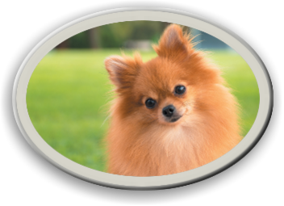

Pomeranian
The Pomeranian thinks that it is "hot stuff" so it likes to be the best. It is very small it has a foxy face, curled tail and a very thick coat of fur. Don't worry it is normally not bad with any of your other pets. Pomeranian's are spunky and bright. If you think that fits you, then buy one. But be warned they shed a lot and like to bark for a long time. So just be aware of that - if you are buying a Pomeranian.
